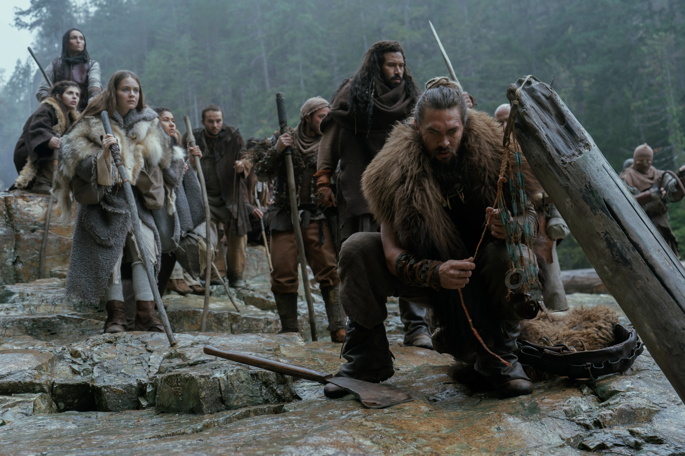

"In a world without sight, the twins were born with a mythic power."
In the distant future, a deadly virus has decimated humankind and left the survivors without their sight. Centuries later, society has found new ways to interact, build, hunt, and survive. The status quo is shattered when a set of twins is born with the ability to see. Baba Voss, the leader of the Alkenny tribe, must protect his adoptive children against a powerful queen who believes their sight is a forbidden heresy and wants them destroyed.